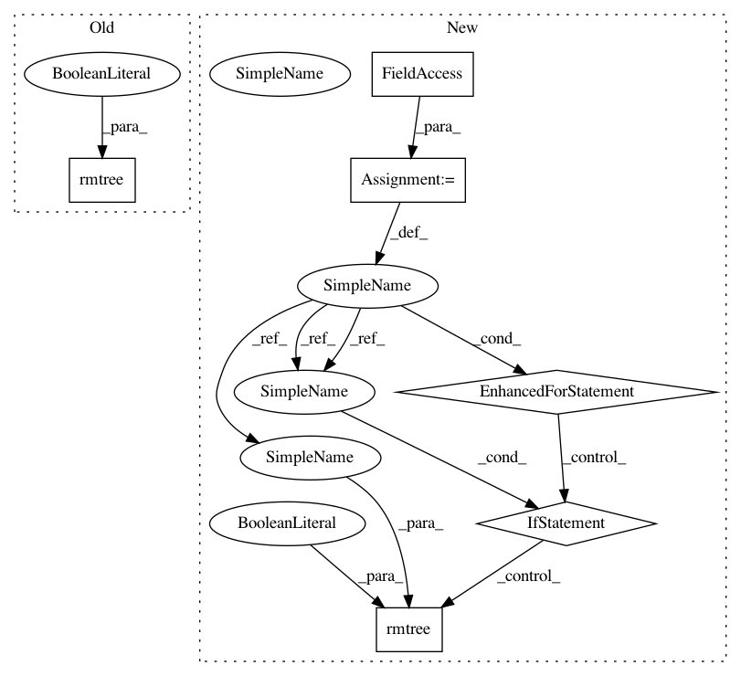

5775eaf234730c8aaaa06e46d0eb6e0a8348929e,test/test_cli/test_restore_state.py,TestSMACCLI,tearDown,#TestSMACCLI#,35
Before Change
def tearDown(self):
shutil.rmtree(self.output_one, ignore_errors=True)
shutil.rmtree(self.output_two, ignore_errors=True)
os.chdir(self.current_dir)
def test_run_and_restore(self):
After Change
self.output_dirs = [output_one_dir, output_two_dir]
def tearDown(self):
for output_dir in self.output_dirs:
if output_dir:
shutil.rmtree(output_dir, ignore_errors=True)
os.chdir(self.current_dir)
def test_run_and_restore(self):
In pattern: SUPERPATTERN
Frequency: 3
Non-data size: 6
Instances
Project Name: automl/SMAC3
Commit Name: 5775eaf234730c8aaaa06e46d0eb6e0a8348929e
Time: 2018-01-22
Author: aaronki@users.noreply.github.com
File Name: test/test_cli/test_restore_state.py
Class Name: TestSMACCLI
Method Name: tearDown
Project Name: automl/SMAC3
Commit Name: 5f00a7c91b760f3b98c0323224f36802bde0bc4d
Time: 2017-12-18
Author: kimmiga@informatik.uni-freiburg.de
File Name: test/test_scenario/test_scenario.py
Class Name: ScenarioTest
Method Name: tearDown
Project Name: automl/SMAC3
Commit Name: 5775eaf234730c8aaaa06e46d0eb6e0a8348929e
Time: 2018-01-22
Author: aaronki@users.noreply.github.com
File Name: test/test_cli/test_restore_state.py
Class Name: TestSMACCLI
Method Name: tearDown
Project Name: automl/SMAC3
Commit Name: 5f00a7c91b760f3b98c0323224f36802bde0bc4d
Time: 2017-12-18
Author: kimmiga@informatik.uni-freiburg.de
File Name: test/test_cli/test_restore_state.py
Class Name: TestSMACCLI
Method Name: tearDown